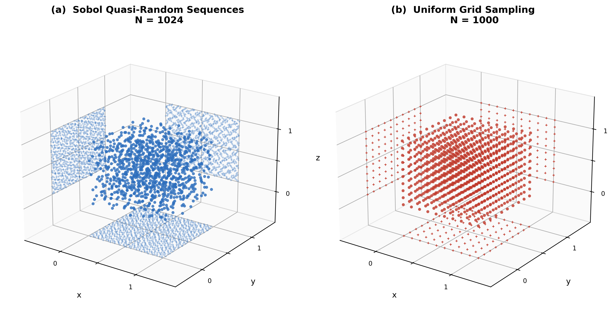

Research Methodology
How effective are LCE and dimensionality reduction algorithms for visualizing chaotic trajectories and identifying periodic orbits in n-pendulum systems?

Fig. 1 — Sobol quasi-random sampling (left) vs. uniform grid sampling (right) in 3D parameter space. Sobol provides more uniform coverage with the same number of points.
1. Sample Generation
Sobol Quasi-Random Sampling
Millions of initial angle configurations are drawn from a Sobol low-discrepancy sequence over \([0,\, 2\pi]^n\), ensuring near-uniform coverage of the n-dimensional phase space without the gaps and clusters of pseudo-random sampling.
A fixed seed (42) ensures that a 10M-sample dataset is a strict subset of a 100M-sample dataset, enabling direct cross-dataset comparison.
2. LCE Computation
GPU-Accelerated OpenCL Kernel
For each sample, two nearby trajectories are integrated simultaneously using the 4th-order Runge-Kutta method. The divergence rate gives the Lyapunov Characteristic Exponent:
The separation vector is rescaled periodically to prevent overflow. GPU acceleration achieves roughly 100× speedup over sequential Python integration, making it feasible to process tens of millions of samples.
n-Pendulum Equations of Motion
All masses and lengths equal 1. The angular accelerations \(\alpha_i\) satisfy:
where
3. Dimensionality Reduction
PCA · t-SNE · UMAP
Three algorithms project the n-dimensional initial condition space to 2D, colored by LCE value. A pixel-grid binning technique renders up to 100 million points efficiently.
UMAP consistently produced the most coherent and interpretable chaos landscapes, preserving both local cluster structure and global topology. t-SNE showed good local structure but was limited to 50,000 points and lost global coherence. PCA failed to capture the nonlinear chaos boundary.
4. Periodic Orbit Identification
Two-Pass Verification Pipeline
Pass 1 (coarse): rank all samples by interestingness score, rewarding large initial angles and low LCE:
where \(\bar\alpha = \frac{1}{n}\sum_i \min(\theta_i \bmod 2\pi,\; 2\pi - \theta_i \bmod 2\pi)\) and \(\lambda_+ = \max(\lambda, 0)\).
Pass 2 (verification): re-integrate the top candidates with longer integration time (\(T = 200\text{s}\)) and smaller perturbation (\(\varepsilon = 10^{-5}\)) to eliminate false positives — orbits that appeared periodic at \(T = 25\text{s}\) but are slowly chaotic.
5. Observational Comparison
Qualitative Analysis of Visualization Methods
PCA, t-SNE, and UMAP were applied to identical datasets and the results examined side by side. UMAP was the only method that revealed fractal-like boundaries between periodic and chaotic regions without prior knowledge of where those boundaries should be.
Key Findings
- UMAP outperforms PCA and t-SNE for visualizing high-dimensional chaos landscapes.
- Periodic orbits become exponentially rarer as n increases, consistent with the KAM theorem.
- Two-pass verification is necessary — short integration times produce significant false positives.
- The chaos landscape has fractal geometry — not uniform, organized around a skeleton of periodic orbits.